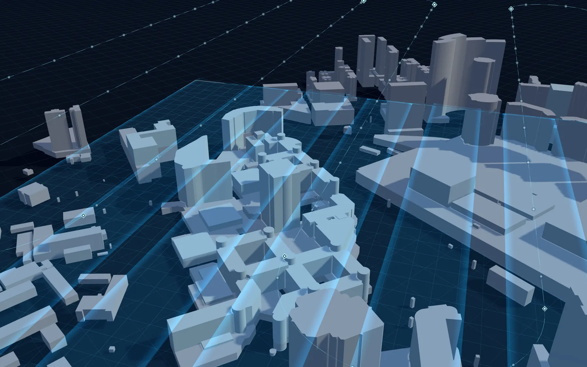
风环境
街道里的风速和行人舒适度，建筑模型直接作为计算域。
规划中四层基础数据建好之后，每个分析模块都直接读取同一份网格、标签和构件，不用再派人上楼测量。
框出测区，自动生成蛇形航线和五镜头拍照点。
航测纹理网格，以 3D Tiles 在浏览器里流式加载。
网格上每个面都标出类别，认错的地方框选一下即可修正。
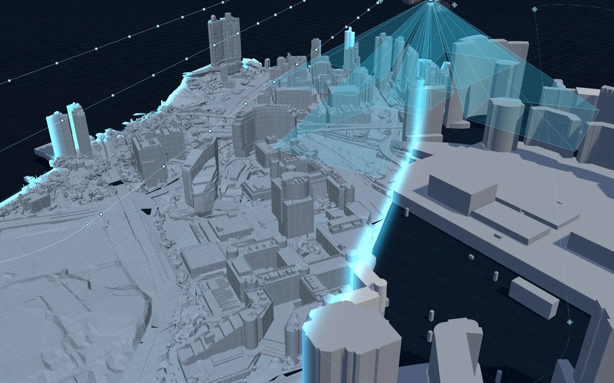
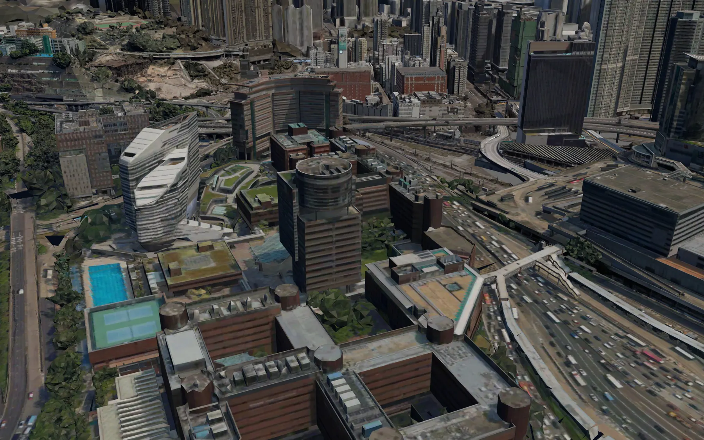
航线与白模飞完之后的实景三维平台在实景网格上量出每栋楼的轮廓、标高和圆弧半径，拼成参数化的建筑形体，再加上立面和屋面构件，导出 IFC。模型与实景在同一个坐标系里，随时可以叠在一起核对。
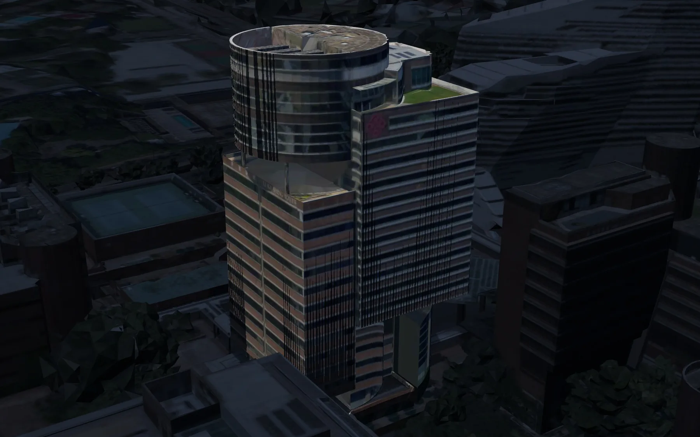
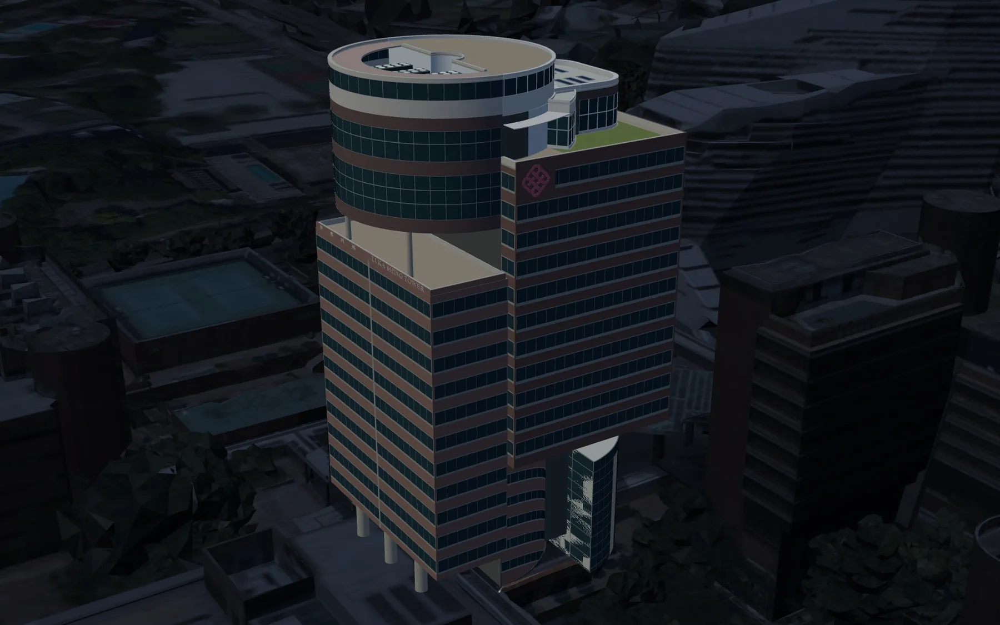
实景网格自动生成的建筑模型轮廓、楼层标高、圆弧半径都直接从网格里测，不依赖图纸。
李嘉诚楼由 30 个形体模块组成，改一个参数，整栋楼跟着更新。
导出 IFC4，构件可按接口查询，直接接入能耗和外立面改造分析。
五个步骤在同一个平台里完成，每一步直接用上一步的结果。
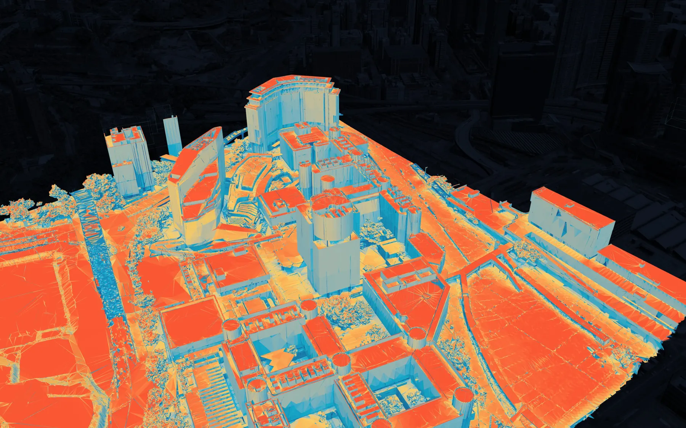
物理模型沿着全年的太阳轨迹，算出校园每个网格面受到的辐照，周边楼宇的遮挡也算在内，再换算成发电潜力。
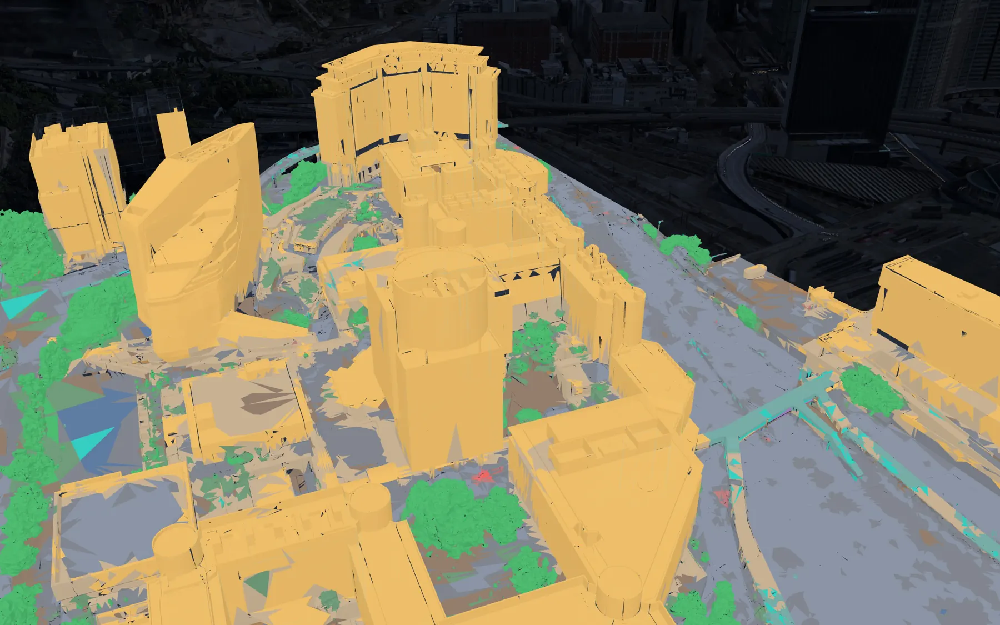
实景语义标签语义分割把建筑屋面和地面、植被分开。平台再把连通的平地合成一块块屋顶，太小或太碎的直接排除。
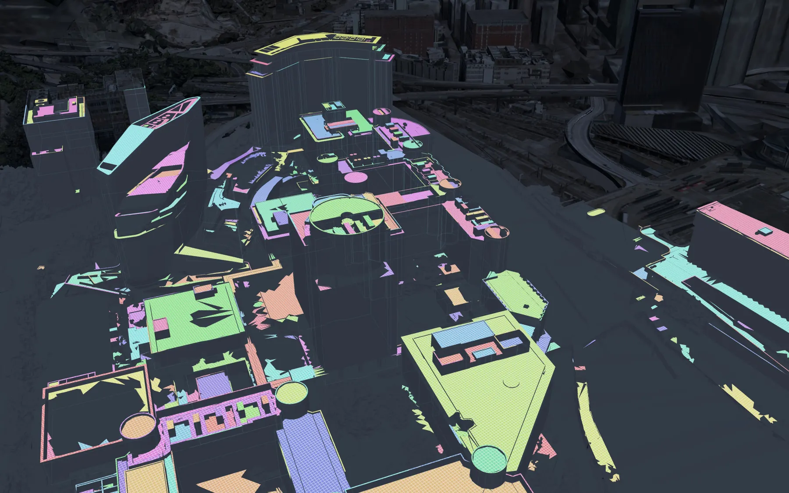
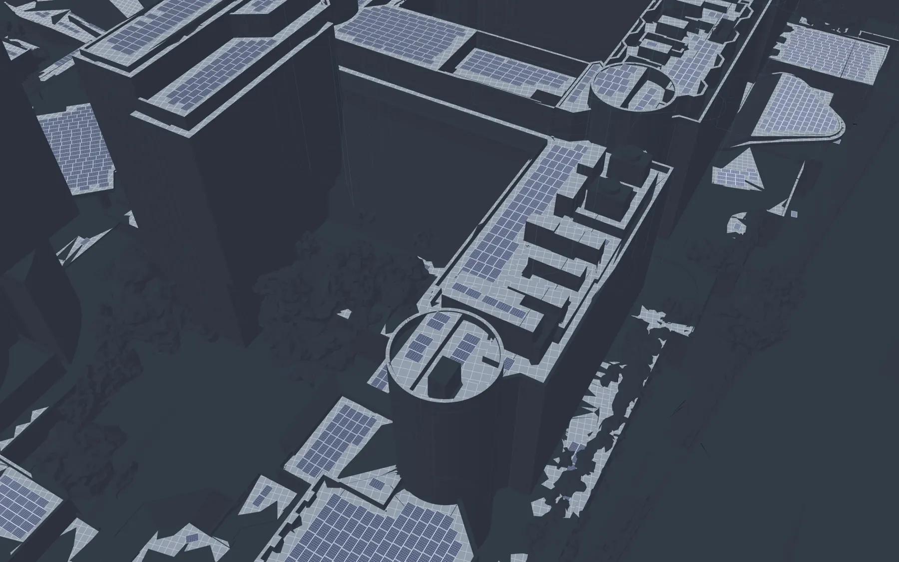
屋顶平地组件排布离屋面边缘留出间距，不平的地方不放，倾角和行距按冬至日的影子留够。阴影大的组件和太小的屋顶，拖一下滑块就筛掉。
太阳位置、楼宇之间的阴影和当天的云量逐块计算，汇总成整个校园送入电网的功率。中午的凹陷来自过境的云。
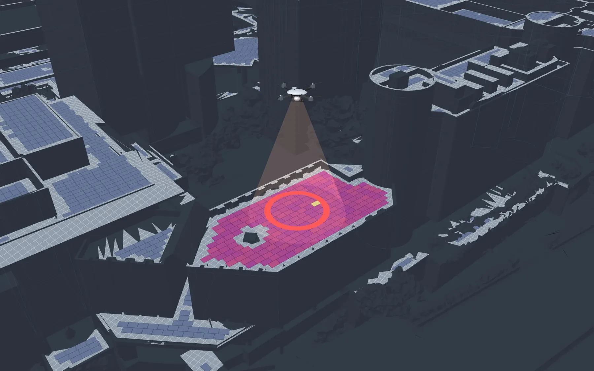
实测低于预测的组串会被标出来。平台把这些屋顶连成一条最短航线，无人机悬停拍红外，热斑、二极管故障和积灰定位到组件编号，自动生成工单。
画面均为平台实时渲染。

街道里的风速和行人舒适度，建筑模型直接作为计算域。
规划中围护结构、窗墙比和太阳得热，逐栋估算空调负荷。
规划中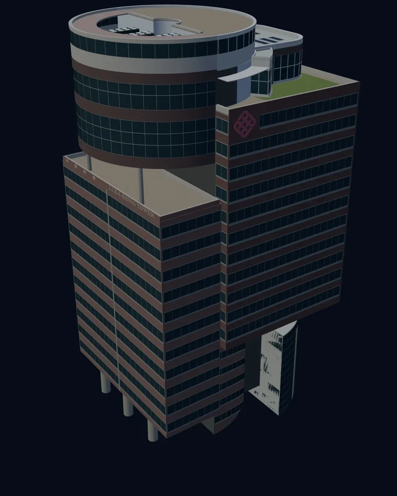
外墙面积、窗、阳台、空调外机，从建筑模型统计翻新工程量。
规划中航测、实景、分割、建筑模型、排布、并网预测和巡检，在一个平台里跑通。
在同一套底座上接入新模块，建筑模型从试点楼扩展到整个校园。
从理大和红磡出发，一片片街区接入，服务香港的城市更新。